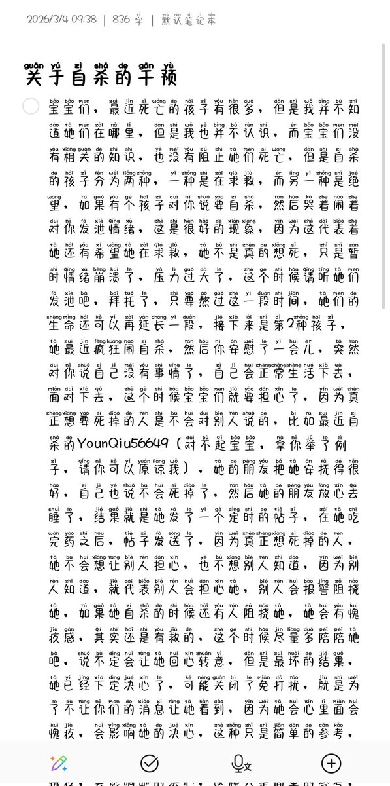

还有一个就是，如果对方准备自杀，就尽力去干预，就算失败了，也请不要过分自责，因为你努力过了，我们改变不了死亡，但是可以避免下一个悲剧的发生，那些自己干预过也还是自杀的朋友，也请不要过分自责，如果她一心想死的话，你怎么做也救不了她的，请记住自己努力过了，失败的话，请下一次再继续努力


宝宝们，请转一下，如果你的朋友想要自杀，如果你的朋友本身不想死去，她只是太绝望了，在等别人向她伸出援手，那就请不要让她在绝望的死去，这不是什么圣母，请别骂我，如果一个人真的想死，是救不回来的，如果她在绝望里面还有希望走向死亡，那就有一定的概率可以救回来
请转发，求求了 https://t.co/2wK1XiuChT
请转发，求求了 https://t.co/2wK1XiuChT